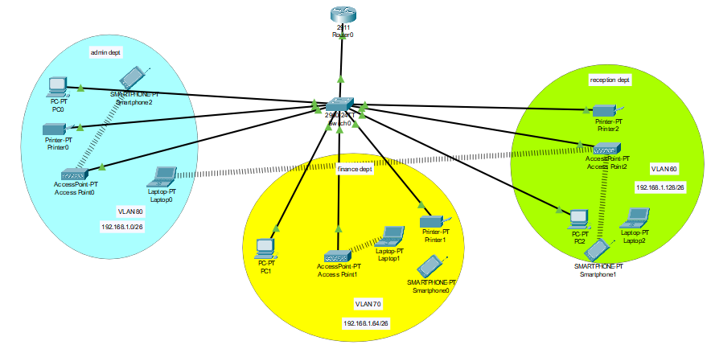
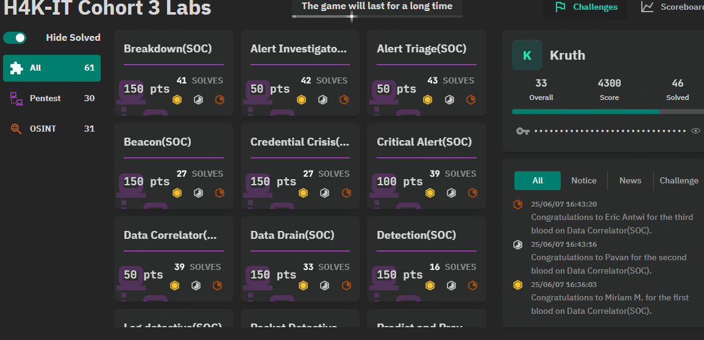

HR Analytics Dashboard (Tableau)
This interactive dashboard provides key HR insights including:
- Total Employees: 1,470
- Attrition: 237 departures analyzed by department, education, and gender
- Top Affected Department: R&D (65.37% of attrition)
- Insights: Employee satisfaction scores, age distribution (30–36 peak), and education field trends
This dashboard empowers HR teams with data-driven strategies for employee retention and organizational planning.

Superstore Sales Dashboard (Power BI)
An insightful Power BI dashboard featuring:
- Metrics: Total sales, profit, quantity sold, discount trends
- Analysis: Region-wise sales, product category performance, customer ranking
- Tools Used: DAX, slicers, and custom visuals
Helps identify high-performing areas and track sales KPIs, showcasing practical business intelligence skills.

Basic Network Configuration (Cisco Packet Tracer)
A virtual LAN design project demonstrating:
- VLANs: Admin (VLAN 80), Finance (VLAN 70), Reception (VLAN 80)
- Subnetting: Each department uses a distinct subnet
- Infrastructure: L3 Switch and Router with inter-VLAN routing
This project focuses on segmentation, security, and scalability in enterprise networking.

Cybersecurity Labs & Challenges
Hands-on labs covering topics such as:
- Domains: Networking, Pentesting, SOC, OSINT, Web, Forensics
- Approach: Flag-based challenges using investigative and analytical thinking
- Tools Used: Wireshark, Splunk, OSINT tools, packet analyzers
Lessons Learned: Effective alert triage, persistence, and pattern recognition. Key focus on real-world skills in cyber defense.